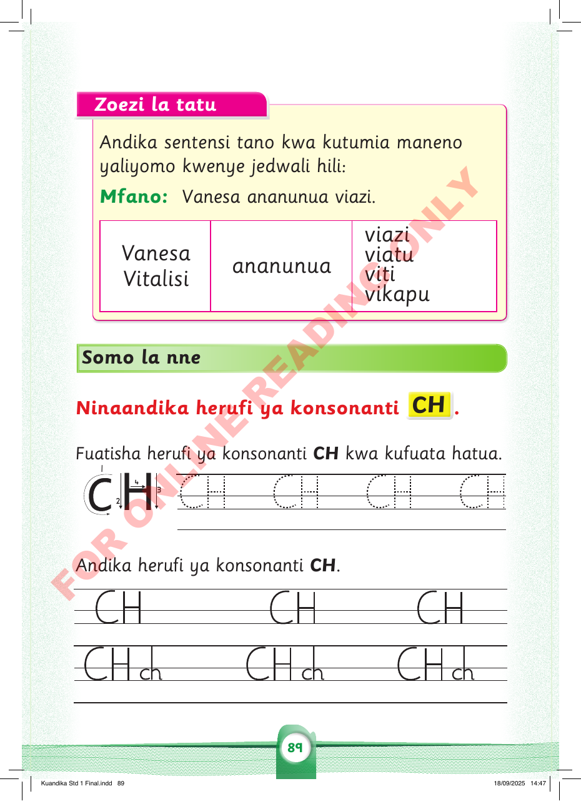

Zoezi la tatu
Andika sentensi tano kwa kutumia maneno yaliyomo kwenye jedwali hili:
Mfano: Vanesa ananunua viazi.
Vanesa
Vitalisi
ananunua
viazi
viatu
viti
vikapu
Somo la nne
Ninaandika herufi ya konsonanti CH.
Fuatisha herufi ya konsonanti CH kwa kufuata hatua / Andika herufi ya konsonanti CH kwa doti ya sita, doti ya sita, doti ya kwanza, doti ya nne, doti ya kwanza, doti ya pili na doti ya tano kwa nafasi na ujaze mstari.
CH
CH
CH
CH
Andika herufi ya konsonanti CH. Andika kwa doti ya sita, doti ya sita, doti ya kwanza, doti ya nne, doti ya kwanza, doti ya pili na doti ya tano kwa nafasi na ujaze mstari.
CH
CH
CH
CHch
CHch
CHch